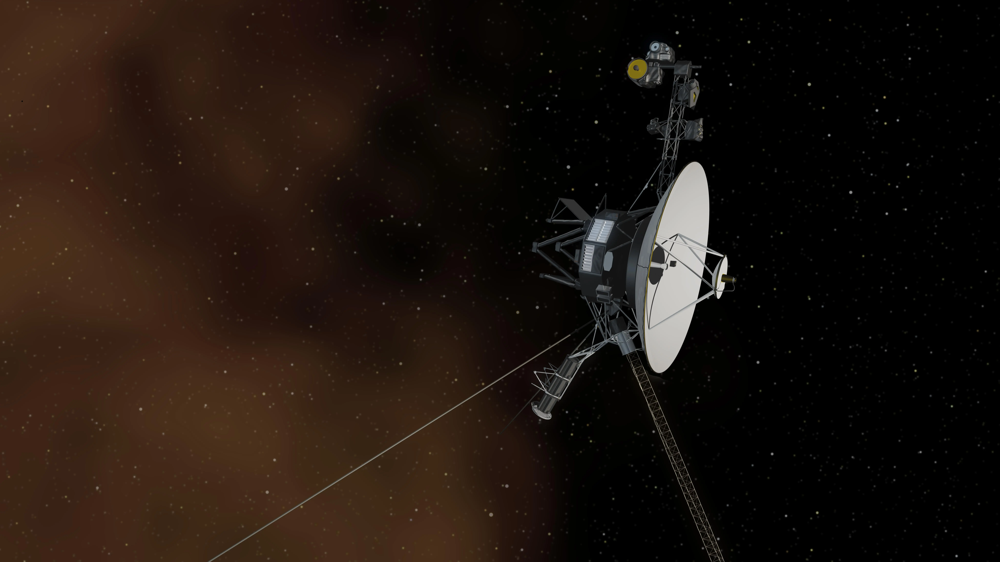
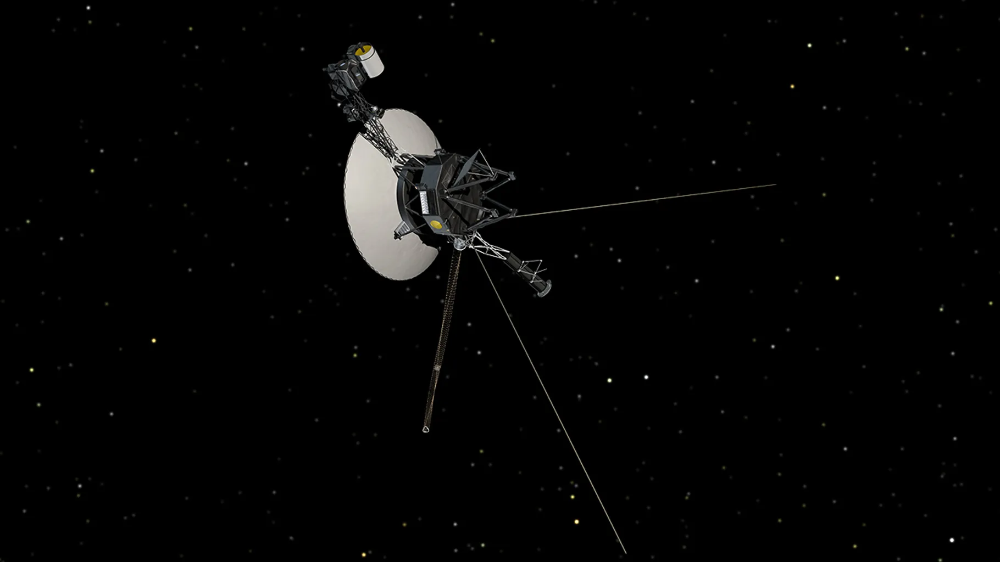
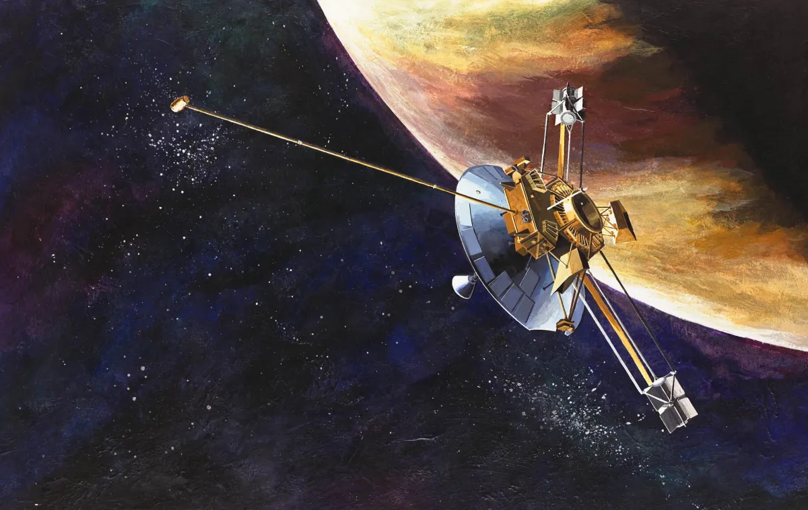

Some NASA spacecraft left the planets far behind. They are still travelling away from Earth, carrying messages for anyone who finds them.

Voyager 1 launched on September 5, 1977. It visited Jupiter and Saturn, then kept going. In 2012 it became the first spacecraft to enter interstellar space, the space between the stars.
Science it made possible: It sent back close-up pictures of Jupiter and Saturn and now measures magnetic fields and plasma waves beyond the edge of the Sun's bubble.
Where is it now? More than 24 billion km from Earth, the farthest human-made object. NASA has switched off most of its instruments to save power, but two still send data.
Golden Record: It carries a 12-inch gold-plated copper disc with sounds and pictures of Earth, in case aliens find it.
NASA source: NASA Science: Voyager mission
Image: NASA

Voyager 2 launched on August 20, 1977. It is the only spacecraft that has ever visited Uranus and Neptune. It entered interstellar space in 2018.
Science it made possible: It gave us our first close-up pictures of Uranus and Neptune and their moons.
Where is it now? More than 20 billion km from Earth, still sending data from a few working instruments.
Golden Record: Like its twin, it carries a Golden Record with sounds and pictures of Earth.
NASA source: NASA Science: Voyager mission
Image: NASA

Pioneer 10 launched in 1972. It was the first spacecraft to cross the asteroid belt and the first to fly past Jupiter, in 1973.
Science it made possible: It showed that spacecraft can travel safely through the asteroid belt and past Jupiter's strong radiation. This helped NASA plan later missions like Voyager.
Where is it now? NASA received its last signal in January 2003, when it was about 12 billion km from Earth. It is still drifting away from the Sun. It carries a metal plaque showing humans and where Earth is.
NASA source: NASA Science: Pioneer 10
Image: NASA